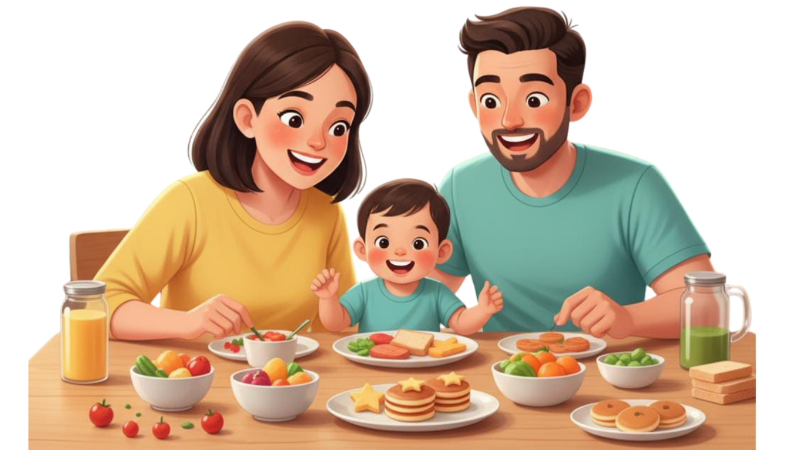

DIGITAL JOURNEY KIDS NUTRITION
Atasi Picky Eater, Cegah Stunting
Apa itu Stunting?
Stunting adalah gangguan tumbuh kembang anak akibat kekurangan gizi kronis.
Ciri-ciri Stunting
- Pertumbuhan tulang melambat
- Tinggi badan rendah
- Postur lebih pendek dari rata-rata
Penyebab Stunting
- Kekurangan gizi 1000 hari pertama
- Pola asuh kurang memadai
- Sanitasi buruk
- Infeksi berulang
Apa itu Picky Eater?
Anak sangat selektif memilih makanan atau menolak mencoba makanan baru.
Faktor Picky Eater
- Pengaruh orang tua saat makan
- Porsi terlalu besar
- Waktu makan terlalu lama
- Anak dipaksa makan
- Lingkungan makan tidak nyaman